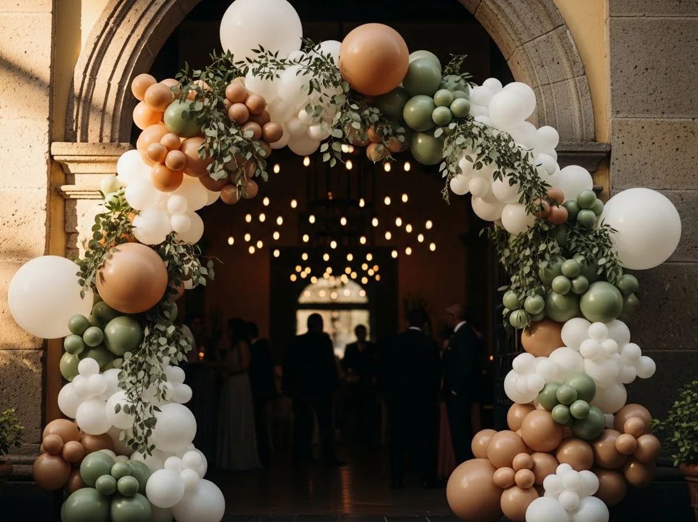

Tendencia 2025
Arco Orgánico de Globos
El arco orgánico es el estilo más solicitado y moderno en decoración con globos. Utiliza globos de diferentes tamaños en una disposición asimétrica y natural que crea un efecto sofisticado, artístico y muy fotogénico. Es la opción perfecta para bodas elegantes, XV años modernos, baby showers íntimos y cualquier evento donde busques un look contemporáneo. Ideal para integrar follaje natural como eucalipto y flores frescas.
- Globos Qualatex de múltiples tamaños (5", 11", 16", 24")
- Disposición asimétrica, artística y natural
- Integración de follaje, flores naturales y elementos decorativos
- Combinación de texturas: mate, chrome, confeti, metálico
- No requiere helio (estructura de aire, más económico)
- Máximo impacto visual y perfecto para sesiones de fotos
- Ideal para: bodas, XV años, baby showers, cumpleaños